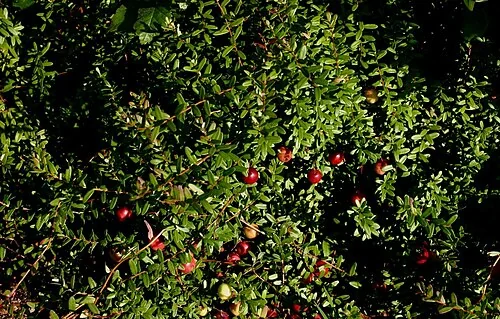
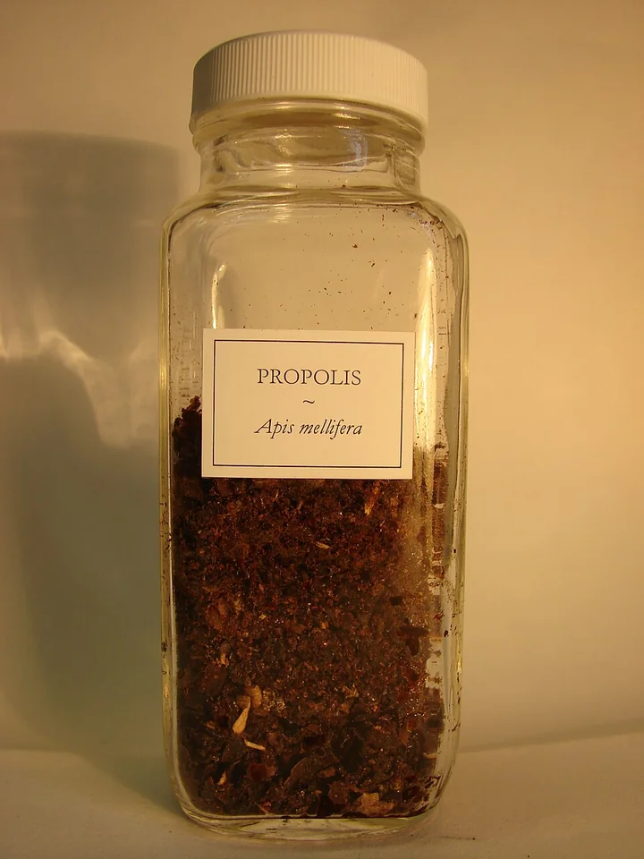

Cist-off
Per la funzionalità delle vie urinarie
DrenaggioBenessere urinarioProtezione
CIST-OFF è un integratore formulato per favorire la funzionalità delle vie urinarie e sostenere il fisiologico equilibrio dell'apparato urinario, grazie alla combinazione sinergica di D-Mannosio, Cranberry titolato in proantocianidine (PAC), N-Acetilcisteina e Propoli standardizzata in galangina. La formulazione nasce dall'integrazione di ingredienti selezionati per agire su aspetti complementari della fisiologia urinaria, associando componenti tradizionalmente utilizzati per il benessere delle vie urinarie con ingredienti innovativi come la N-Acetilcisteina.
A cosa contribuisce
- Favorisce la funzionalità delle vie urinarie
- Favorisce il drenaggio dei liquidi corporei
- Sostiene il fisiologico equilibrio dell'ambiente urinario
- Supporta le naturali difese antiossidanti dell'organismo
- Contribuisce al benessere generale dell'apparato urinario
I principali ingredienti
D-Mannosio
Zucchero semplice naturalmente presente in alcune specie vegetali, tra cui la betulla. È tradizionalmente utilizzato per il supporto della funzionalità delle vie urinarie ed è studiato per il suo ruolo nei meccanismi di adesione batterica, in particolare nei confronti di Escherichia coli.

Cranberry
Frutti e.s. titolato al 25% in proantocianidine (PAC), la frazione bioattiva del cranberry maggiormente studiata: la presenza di PAC standardizzate garantisce un apporto controllato dei principali composti caratterizzanti dell'estratto. Favorisce la funzionalità delle vie urinarie e il drenaggio dei liquidi corporei.
N-Acetilcisteina (NAC)
Derivato della cisteina e precursore del glutatione, uno dei principali sistemi antiossidanti dell'organismo. La sua presenza nella formulazione è finalizzata a sostenere le naturali difese antiossidanti ed è oggetto di studi nell'ambito dei processi correlati al biofilm.

Propoli
Resina e.s. titolata al 12% in galangina, estratto vegetale ricco in composti fenolici e flavonoidi. La standardizzazione in galangina permette di garantire un apporto costante di uno dei principali componenti bioattivi della propoli.
Perché questa combinazione?
Una formulazione costruita per sinergia
CIST-OFF non nasce dalla semplice associazione di ingredienti tradizionalmente utilizzati per il benessere urinario: ogni componente è stato selezionato per contribuire a un approccio integrato e complementare.
- D-Mannosiosupporto ai meccanismi fisiologici legati all'adesione batterica
- Cranberry titolato in PACapporto di proantocianidine standardizzate, frazione caratterizzante del cranberry
- NACsupporto ai sistemi antiossidanti endogeni, oggetto di studi sui processi correlati al biofilm
- Propoli standardizzata in galanginaapporto di composti fenolici e flavonoidi bioattivi
La formulazione è stata sviluppata da farmacisti con un approccio basato sulla sinergia tra gli attivi, privilegiando estratti standardizzati, titolazioni dichiarate e materie prime di elevata qualità.
Contenuti medi
| Componente | 1 capsula | Dose max (6 cps) |
|---|---|---|
| D-Mannosio | 200 mg | 1200 mg |
| Cranberry e.s. | 150 mg | 900 mg |
| di cui proantocianidine | 37,5 mg | 225 mg |
| N-acetilcisteina | 100 mg | 600 mg |
| Propoli e.s. | 50 mg | 300 mg |
| di cui galangina | 6 mg | 36 mg |
Contenuti medi per dose giornaliera.
Modalità d'uso
Assumere le capsule con acqua. Si consiglia l'assunzione a vescica svuotata, preferibilmente dopo la minzione, per favorire la presenza degli attivi nell'ambiente urinario; è consigliato mantenere una buona idratazione durante la giornata. Dose di mantenimento: 1 capsula al giorno. Dose intensiva: fino a 6 capsule al giorno, secondo necessità e secondo le indicazioni riportate in etichetta.
Informazioni in etichetta ingredienti · avvertenze · conservazione
Ingredienti
D-Mannosio; Cranberry (Vaccinium macrocarpon Aiton) frutti e.s. tit. 25% in proantocianidine; N-acetilcisteina; Agente di rivestimento (involucro capsula): cellulosa; Propoli resina e.s. tit. 12% in galangina; Agenti antiagglomeranti: biossido di silicio, acidi grassi, sali di magnesio degli acidi grassi. Gluten free · Lactose free · Capsula vegetale, adatto a vegetariani.
Avvertenze
Non superare la dose giornaliera consigliata. Tenere fuori dalla portata dei bambini di età inferiore a 3 anni. Gli integratori alimentari non vanno intesi come sostituti di una dieta varia ed equilibrata e di uno stile di vita sano. Non somministrare ai bambini al di sotto dei tre anni di età. Per la presenza di propoli, il prodotto è sconsigliato in caso di ipersensibilità ai derivati apistici. Per l'uso in gravidanza e allattamento si consiglia di sentire il parere del farmacista o del medico.
Conservazione
Conservare ben chiuso in luogo fresco e asciutto, al riparo dalla luce solare diretta e da fonti di calore. La data di fine validità si riferisce al prodotto correttamente conservato, in confezione integra.
Le altre formule Stilo Lab